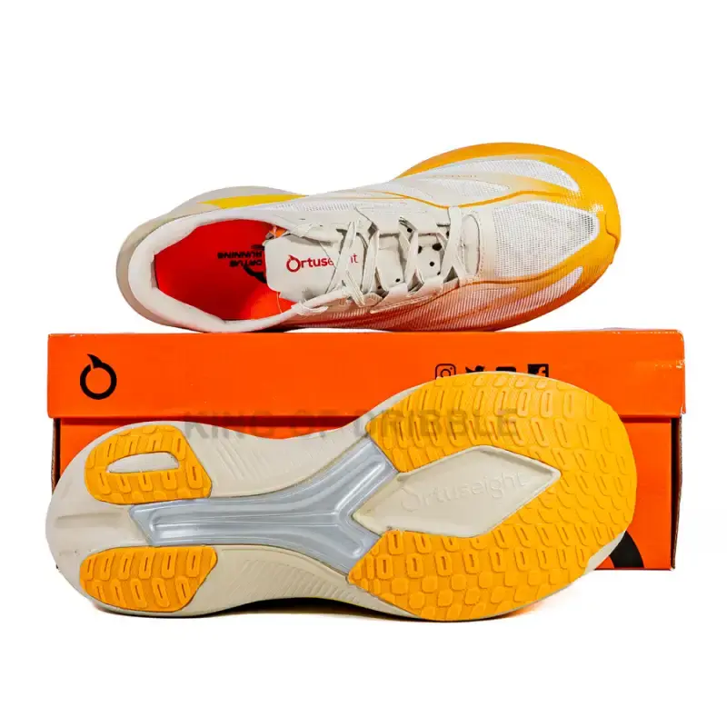
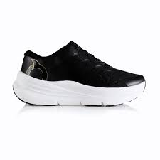
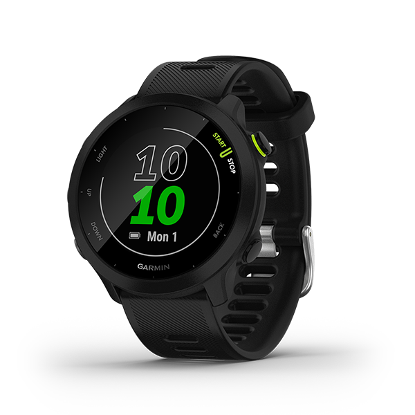
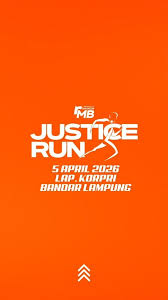
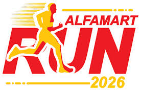

(2).JPG)
Hello, I'm
Andika Fikri Azhari
"Berlarilah terus - Sampai orang orang mengenalmu karena lari."
Running Journey
Dari langkah pertama hingga garis finish — setiap kilometer mempunyai cerita
Langkah Pertama
Mulai berlari 1-2KM. Tidak bisa lari tanpa berhenti,nafas mssih ngos ngosan.
Beginner5K Pertama — Finish!
Beli sepatu running pertama dan Finish Event 5K pertama di Locomotive Run walaupun berakhir dengan finish kaki kram ! nafas masih senin kamis,Kaki habis lari langsung sakit.
BreakthroughSub-25 5k ,sub 1 jam 10k, sub 2 jam 21k
lari udah enak dan mulai rutin ikut event , mencetak PB sub 25 di 5k, Sub-55 menit di 10K! Finish Half Marathon pertama 1:52:00..
Level UpTarget: Sub 20 5k & FM Sub 5
Target marathon sub-5 di juni 2026. Terus berkembang,dan terus berlari.
In ProgressPersonal Best
Catatan waktu terbaik di setiap jarak
🎯 Target 2026
My Gear
Peralatan andalan di setiap run

Ortuseight Hyperglide 4.0
Carbon plate super shoes. Responsif dan ringan.

Ortuseight Hyperblast Encore
Sepatu sehari-hari. Nyaman untuk easy run dan long run.

Garmin Forerunner 55
GPS akurat, training coach & recovery advisor.
Jadwal Latihan
Program mingguan yang saya jalani saat ini
| Hari | Sesi | Detail | Volume |
|---|---|---|---|
| SENIN | Easy Run | Lari pace nyaman-cepat 20-140 Menit. Tingkatkan endurance dan aerobik. | Pace 6-7 |
| SELASA | Fartlek + Core | Easy run 30 menit+Stride di akhir + latihan core stability 15 menit. | 30 menit-1 jam |
| RABU | Interval Run | pace 3.30-4.10 dengan recovery 140 detik jogging. | 1 jam |
| KAMIS | Rest / Cross | Istirahat total atau cross-training: renang/sepeda/yoga. | Aktif Recovery |
| JUMAT | Hill Repeats | 6x200m tanjakan. Perkuat otot kaki dan power. | 7 km / 45 min |
| SABTU | Easy Run | Lari santai dengan grup. Social run. | 50 min |
| MINGGU | Long Run | Lari jarak jauh progresif. | 18-35 km / bertahap sampai peak training (menghindari cedera) |

Justice Run 2026
Milad Run, Target: Sub-22 menit.
.png)
BTN Jakarta International Marathon
Lebarannya pelari, siap meramaikan jalanan Jakarta!

Alfamart Run 2026
Fun run dengan hadiah + goodie bag terbesar di Indonesia.
Strava Live
Data real-time dari profil Strava saya
Rute Favorit
Tempat-tempat yang sering saya lari
Pemda Loop
Satu satunya rute terdekat. Mengelilingi komplek perkantoran kabupaten dengan udara yang sejuk dengan pemandangan hamparan persawahan yang indah.
Let's Connect
Mari berlari bersama
"Berlarilah terus —
sampai orang orang mengenalmu karena lari."